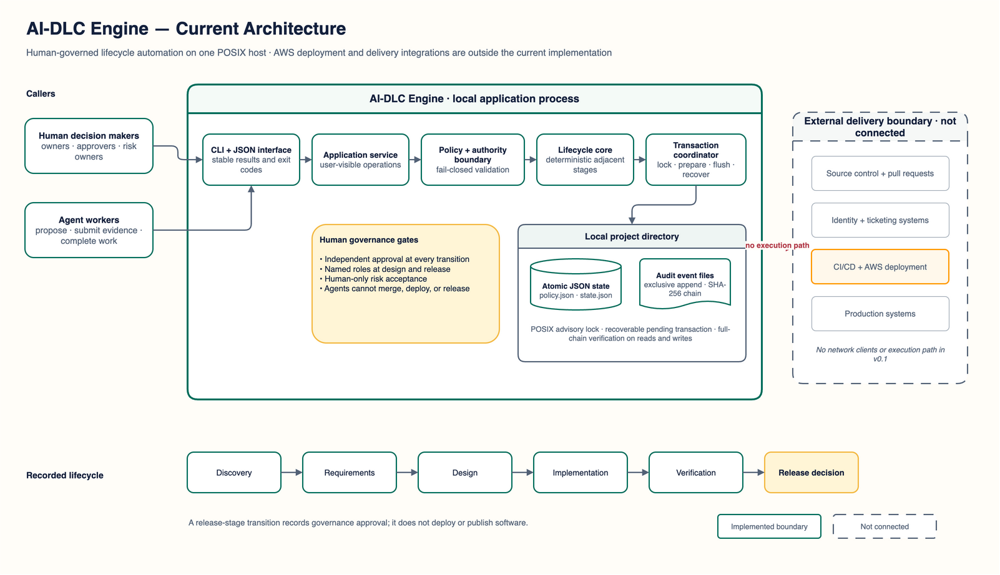
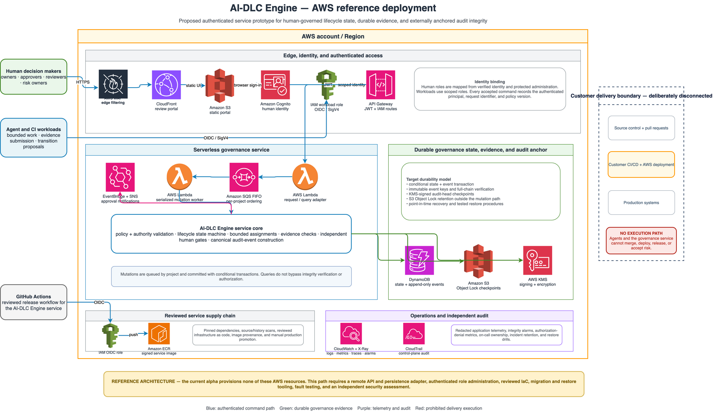

Current implementation
AI-DLC Engine architecture
Inspect the local request path, human authority gates, durable transaction sequence, and the external delivery systems that remain outside the engine.
System map
Implemented system and explicit delivery boundary

Interactive architecture
Walk the implemented flows
Choose a flow, select any step, or use the controls to move through the sequence. All content is bundled with this page and works without a network connection.
AWS reference deployment
Proposed authenticated service architecture
This future-state view maps the production-readiness gaps to AWS services while preserving the rule that governance records decisions but cannot execute customer merges, deployments, or releases.

Component map
Three layers with one authority boundary
Interface
The installed CLI accepts asserted actors and commands, then returns stable JSON results and exit codes.
Governance engine
The application service, policy validator, and lifecycle core enforce evidence, separation, role, and stage rules.
Evidence store
Atomic JSON state and exclusively created, hash-linked audit events live in one local project directory.
Architecture boundaries
What this release does—and does not—connect
Implemented locally
Lifecycle state, assignment scope, evidence metadata, human gates, transaction recovery, and audit verification.
Caller responsibility
Actor identity and roles are asserted by the invoking environment; the engine provides no login or identity provider.
Not connected
Source control, ticketing, CI/CD, AWS deployment, and production systems have no client or execution path in version 0.1.
Canonical artifacts
{kind=link}
{kind=link}
{kind=link}